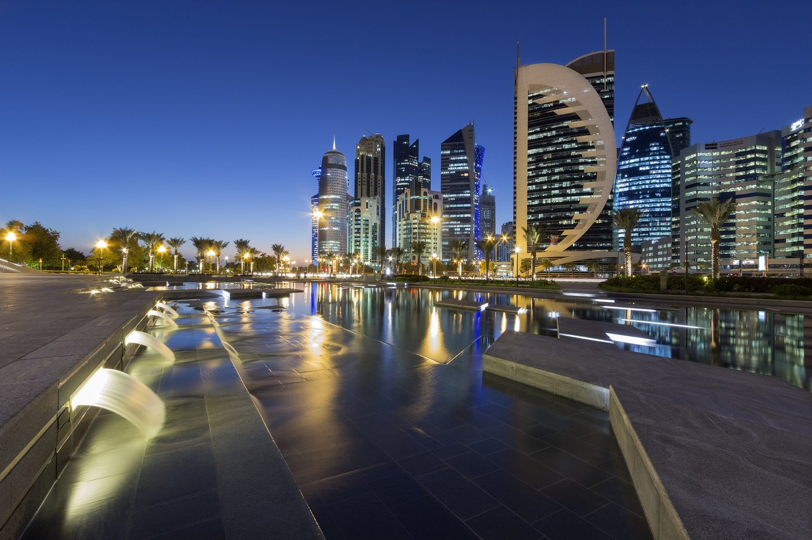
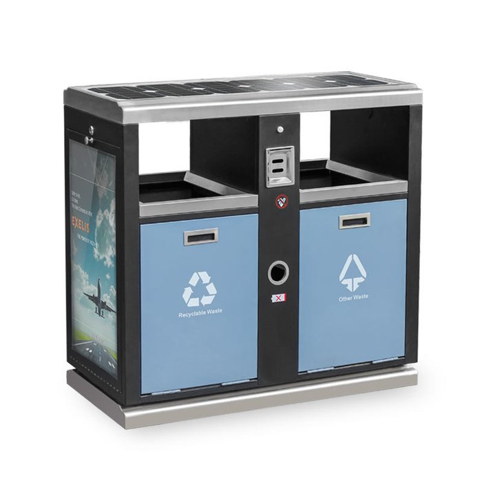
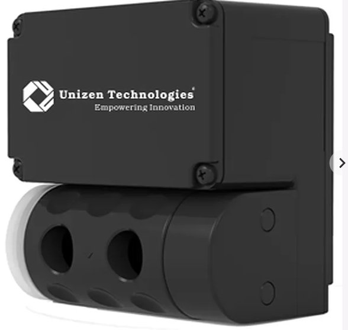
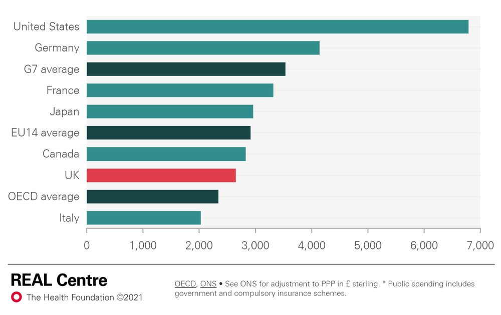

Case Study — Case Competition · 🏆 1st Place
Vodafone Qatar Sustainability Case Study
A winning case-competition proposal for Vodafone Qatar: IoT-enabled smart waste management and a unified national health record system, each mapped to UN Sustainable Development Goals and Qatar National Vision 2030.
The Brief
Vodafone Qatar — the world's fastest mobile network per Ookla's Q3/Q4 2022 Speedtest Intelligence analysis, and the first operator globally to go live with commercial 5G — sponsored a case competition asking teams to propose an idea helping Vodafone Qatar advance at least one of four UN Sustainable Development Goals: #3 Good Health & Well-being, #7 Affordable & Clean Energy, #11 Sustainable Cities & Communities, or #13 Climate Action — with strong relevance to both Vodafone Qatar as a telecom/technology enabler and to Qatar National Vision 2030.
Submissions needed a clear problem statement, a practical idea, tangible impact metrics, and a rationale for feasibility. Our five-person team targeted two SDGs at once — smart waste management and a unified national health system — and placed 1st among competing student teams from the College of Business and Economics at Qatar University.
Solution 1 — IoT Smart Waste Management
Qatar generates roughly 2.5 million tons of waste annually (about 2.5 kg per person per day), and Lusail alone is projected to house 200,000 residents. Collection today runs on a fixed schedule rather than actual fill-level — causing overflow (health/pollution risk), inefficient routes, and unnecessary fuel, labor, and equipment cost.
We evaluated two alternatives:
- Alternative 1 — new solar-powered smart bins: purpose-built bins with sensors, solar power, and driver-navigation tablets. Per-unit cost: ~$550.
- Alternative 2 — retrofit existing bins: add fill-level sensors ($140), a small solar panel ($20), and installation labor ($110) to bins already in place. Per-unit cost: ~$270 — roughly half the cost of buying new.


Recommendation: retrofit existing bins rather than replace them — cheaper, faster to deploy, and directly targets SDG 3 (Health), SDG 11 (Sustainable Cities), and SDG 13 (Climate Action).
Solution 2 — A Unified National Health System
Qatar's healthcare records are split across public and private providers, so doctors often lack a patient's full treatment history. Heavy manual record-keeping drives up costs, and the average person spends an estimated QR 47,000 on healthcare — some of it wasted on incorrect or duplicate medication caused by incomplete records.
We compared two alternatives:
- Alternative 1 — build a new app with Vodafone Qatar and Microsoft Azure: global accessibility, but total cost ~$531,250 (development + maintenance + testing).
- Alternative 2 — expand MyHealth, the Ministry of Health's existing system, with Vodafone Qatar's support: linked directly to Qatar ID, government-secured, and total cost only ~$100,000.
We benchmarked the concept against the UK's NHS — a similar unified system credited with helping keep UK healthcare spending below several peer countries.

Recommendation: expand MyHealth rather than build new — over 5x cheaper, faster to deploy, already MoH-approved, and more secure by virtue of staying within existing government infrastructure. Targets SDG 3 (Health) and SDG 11 (Sustainable Cities), with a phased rollout by medical institution over 24 months.
Additional Ideas & Impact Metrics
Beyond the two core proposals, we flagged two further opportunities worth exploring:
- Queue management: IoT devices at land borders/ports to monitor fuel usage of incoming vehicles, with AI-assisted queue optimization.
- Air quality improvement: IoT air-quality monitoring in high-pollution areas, paired with targeted air-purifying installations.
To track real progress post-launch, we proposed measuring:
- Fuel consumption per collection vehicle and sensor real-time feedback rate.
- Percentage of overfilled bins before vs. after rollout.
- Customer sentiment on environmental practices, and employee satisfaction tied to sustainability goals.